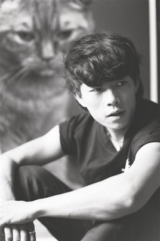

赵雷，1986年7月20日生于北京，中国内地民谣歌手、音乐人。 2011年，赵雷发行个人第一张唱片《赵小雷》，专辑收录的主打歌曲《南方姑娘》被众多歌手及乐迷翻唱，赵雷也因此被更多人认识受到关注。2014年发行第二张个人专辑《吉姆餐厅》。2016年12月21日，赵雷发行专辑《无法长大》；2月，赵雷参加湖南卫视综艺节目《歌手》第三期，作为补位歌手演唱歌曲《成都》突围成功。
赵雷高中时接触音乐并学习吉他，走过陕西、甘肃、云南、西藏，为音乐之路积累了底蕴与人文滋养[10] 。 2003年，17岁的赵雷背着心爱的吉他，或穿梭或停留在北京的地下通道，开始了地下歌手日子[11] 。 2007年，赵雷开始穿行中国川藏、云南地区，行走的路途中，写下《开往北京的火车》、《咬春》等作品[12] 。
2009年，赵雷通过参与《速写穿乐》全国巡演；同年创办反拍音乐工作室[9] 。 2010年5月1~3日，赵雷参加了北京草莓音乐节、北京迷笛音乐节，引起关注；8月，参加《快乐男生》先在长沙唱区演唱了歌曲《塔吉汗》和《画》，从而获得PASS卡，但长沙唱区因合约问题取消PASS卡，赵雷选择从而转战广州唱区，并通过演唱原创歌曲《画》、《南方姑娘》、《雪人》等成功晋级全国20强，止步全国12强[9] ；9月22日在北京房山举行的长阳音乐节蒲公英舞台压轴演出。[13] 2011年7月，赵雷发行个人首张专辑《赵小雷》，专辑收录的主打歌曲《南方姑娘》[14] ；7月27-29日，赵雷参加张北草原音乐节[15] ；12月4日，赵雷在糖果举办了自己的首张个人专辑发布会[16] 。 2012年9月20日，赵雷助阵赵照个人“2012新专辑《糙》北京首唱会暨全国巡演”演出，与恩师赵照合唱一曲《北京的冬天》[17] 。10-11月，赵雷作为“十个轮子摩托车巡演”的创始人，同浩子，小猛，冠奇，旭东等人展开摩托车摇滚巡演，从成都出发到广州共途径20个城市[18] ，三十天共进行11场演出[19] 。 2013年，赵雷进行了个人44站全国巡演，9月10日巡演的第三站在烟台“小灯塔咖啡馆”里举行，成为烟台举办首场开在咖啡馆里的个人演唱会[20] 。 2014年1月，赵雷以民谣歌手的身份参加《中国好歌曲》，原创歌曲作品《画》被刘欢选中，并收录于刘欢的原创大碟《新九拍》中[21] ；4月5月参加《长江国际音乐节》；5月，赵雷参加香港青年音乐节，与谢安琪、张靓颖、吉克隽逸、王铮亮等同台。同年推出个人第二张专辑《吉姆餐厅》。10月26日，赵雷携专辑来到全国巡演沈阳站，用音乐讲述心中的那个吉姆餐厅[1] 。11月，赵雷发布了专辑中的首支单曲MV《我们的时光》[23] 。 2015年1月，赵雷在山东济南举行的月木纹时光MINI live系列演唱会——赵雷专场开唱[4] ；9月，赵雷发表单曲《再也不会去丽江》[24] ；11月，赵雷“我们的时光”全国剧院巡演正式启动，历史两个月，11月27日西安站和11月29日南京站圆满结束[25] ，演出共历经十三个城市[26] ；12月，获微博音乐人网络评选的“年度金曲”以及“年度最受欢迎音乐人”称号[27] 。 2016年3月，与歌手伍佰一道参加台湾唱片公司STREETVOICE主办的“大事发声”StudioLive在线直播演出第一期演唱嘉宾，一周内演出视频点播达1400万次[28-29] 。 2017年1月21日，赵雷发行专辑《无法长大》[5] ；2月，赵雷参加湖南卫视综艺节目《歌手》第三期，作为补位歌手演唱歌曲《成都》突围成功[6] 。
赵雷的音乐，虽然没有诗句般的柔情感动，但痞子气的调侃，单纯率直。词作、编曲朴实坦诚以描写生活中细微见长，画面感极强。（21cn新闻网[31] ）生在北京长在北京的赵雷，他的音乐作品具有传统北京胡同的文化气质，正如他沉默寡言的性格，质朴坦诚。作词以白描为主，编曲朴实简洁，主题都是以生活的细节见长，不做作，不矫情，又接地气。（腾讯网评[32] ） 赵雷作为新一代创作人，其独特的魅力吸引许多年轻乐迷的长期关注。他的歌词兼具思想深度与优美的文字功力，清楚的信息朗朗上口的旋律让听众充满认同感，加上这几年的巡演积累出用音乐表达情感的自然风格，让他的演出更流畅也更动人。幕后从业大师和音乐人看完赵雷的表演后，纷纷嘉许他能够成为独立音乐人的先锋。（网易评[33] ） 赵雷专辑《无法长大》的每首民谣，都是一个真实故事，因为他喜欢写真实的东西。也正因此，略带沧桑的低沉嗓音，配上直白、朴素的歌词，触动了无数人心底的柔软。（光明网评[5] ）